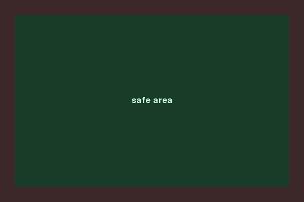

Экран мобильной игры: ориентация, пропорции и High-DPI
Мобильный экран не похож на десктопное окно: он поворачивается, у него нет стандартного соотношения сторон и часто высокая плотность пикселей.
На десктопе игра почти всегда получает окно фиксированного или свободно меняемого размера, которое выбирает сам игрок. Мобильный экран устроен иначе — и у него есть сразу несколько собственных источников сложности: ориентация, соотношение сторон, безопасная область и высокая плотность пикселей.
Ориентация экрана
Телефон можно держать вертикально (portrait) или горизонтально (landscape), и игрок вправе повернуть устройство в любой момент. Игра должна либо явно ограничить себя одной ориентацией (частый выбор для аркад и головоломок), либо честно пересчитывать раскладку экрана при повороте — то есть повторно решать, куда поместить игровое поле и виртуальные кнопки управления из раздела 20.11.
Соотношение сторон и безопасная область
Экраны разных телефонов сильно отличаются по соотношению сторон — в отличие от десктопных мониторов, где почти всегда широкоформатный прямоугольник, здесь диапазон гораздо шире, от почти квадратных до сильно вытянутых. Дополнительно у многих современных экранов есть вырезы под камеру и закруглённые углы — область экрана, физически видимую пользователю, но небезопасную для важных элементов интерфейса. Разработчики называют пригодную для контента часть экрана safe area (безопасная область) — счёт и важные кнопки размещают внутри неё, а не впритык к самому краю экрана.

Разрешение и плотность пикселей — разные вещи
Разрешение — это просто количество пикселей экрана, например 2400×1080. Плотность пикселей (PPI/DPI, pixels per inch) — это то, насколько плотно эти пиксели упакованы на реальном физическом размере экрана. У современных телефонов физический экран небольшой, а пикселей на нём часто больше, чем на заметно более крупном настольном мониторе — то есть плотность выше при сопоставимом или даже меньшем разрешении. Экран с высокой плотностью принято называть high-DPI.
Отсюда третье понятие — логический размер: то, в каких единицах ваш код и интерфейс думают об экране, в отличие от того, сколько на нём физических пикселей на самом деле:
| Особенность экрана | Десктоп | Мобильные |
|---|---|---|
| Ориентация | Обычно фиксированная, не меняется во время игры | Может поменяться в любой момент |
| Соотношение сторон | Стандартный узкий диапазон | Широкий разброс между устройствами |
| Вырезы и закруглённые углы | Практически не встречаются | Обычное дело — нужна safe area |
| Плотность пикселей | Обычно ниже | Часто заметно выше — нужен масштаб под high-DPI |